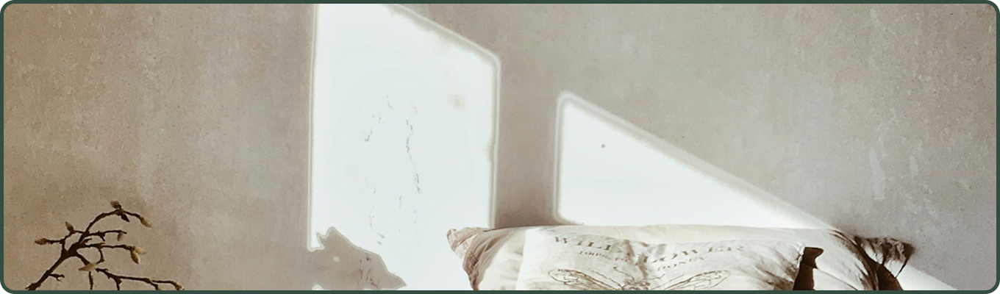

Fysiske symptomer
Hovedpine, spændinger og træthed.
Få viden om, hvad stress er, hvordan det påvirker dig, og hvad du kan gøre ved det.
Stress er kroppens naturlige reaktion på pres. I korte perioder kan det hjælpe os med at præstere, men hvis presset varer ved, kan det påvirke både vores fysiske of mentale trivsel.
Hovedpine, spændinger og træthed.
Uro og koncentrationsbesvær
Søvnproblmer og irritation.

Du behøver ikke håndtere stress alene. Det kan gøre en stor forskel at tale med nogen om, hvordan du har det. På vores kontaktside finder du information om rådgivning og relevante støttemuligheder.
Gå til kontakt